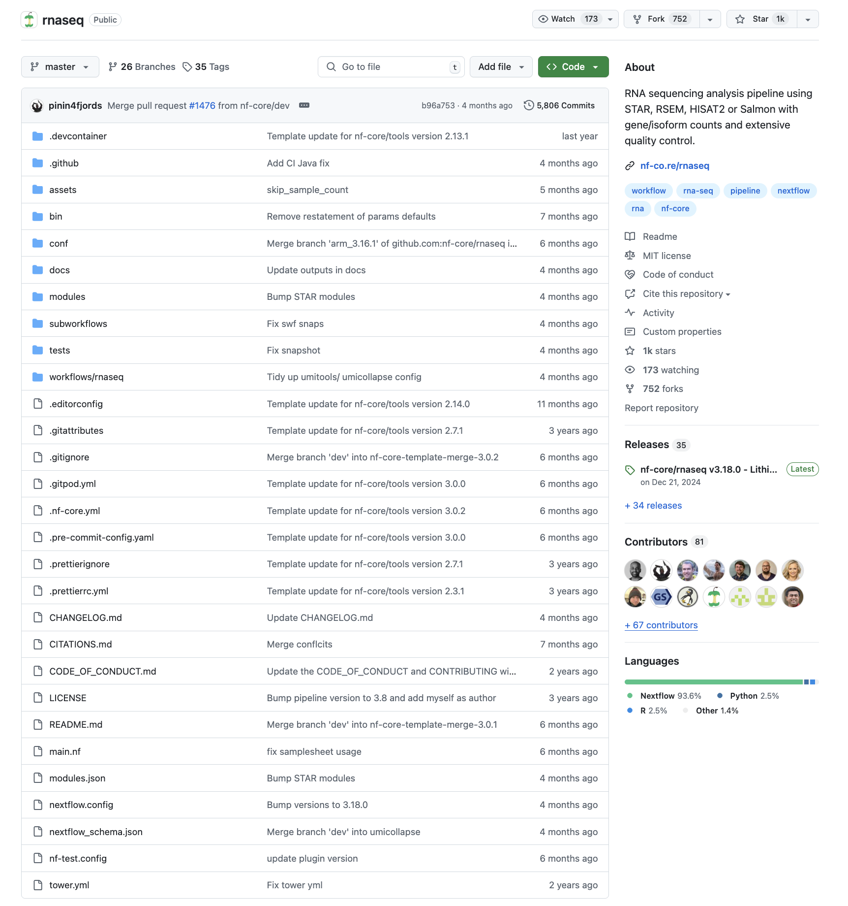

Nextflow Development - nf-core Template
- Gain an understanding of nf-core template structures
- Develop a basic Nextflow workflow with nf-core templates
4.1 Recap: nf-core
What is nf-core?
nf-core provides a standardised set of analysis workflows that are modular, scalable, and portable. These workflows follow best practices, and allow researchers from around the world to collaborate on workflow development and maintainence, all of which are tested and peer reviewed. Ultimately, this helps increase the reliability and reproducibility of bioinformatics analysis.
nf-core is published in Nature Biotechnology: Nat Biotechnol 38, 276–278 (2020). Nature Biotechnology
Key features of nf-core workflows include: extensive documentation, which outlines installation, usage, and expected output files, stable releases which ensure reproducibility, portability of packaged software that is automatically downloaded using Conda/Singularity/Docker, and cloud-ready allowing scalability.
nf-core workflow structure
nf-core workflows follow a common template structure. For nf-core/rnaseq:

The main folders and files we will focus on today:
- Modules and subworkflows are stored as separate
.nffilesmodules.json: contains a list of the modules and subworkflows installed in the
- Configuration files are stored as separate
.configfiles.conf/base.config: contain default resource allocations for process groups (ie.process_high, etc.)nextflow.config: contain default workflow parameters and software management profiles
- A main workflow
.nffile that is used to launch the workflow - An analysis workflow file inside
workflows/<pipeline>/main.nfis used to chain together separate modules/subworkflows - A schema file
assets/schema_input.json, used to specify required values in the input samplesheet. This can be used to build sample metadata - A schema file
nextflow_schema.json, used to specify required parameters to the pipeline
4.2 Recap: Pipeline syntax and additional Nextflow DSL
4.2.1 Module file and process structure
In nf-core pipelines, each process is separated into a separate module file. For example, RNASEQ’s fastqc module file contains just one process – FASTQC.
process FASTQC {
tag "$meta.id"
label 'process_medium'
conda "bioconda::fastqc=0.12.1"
container "${ workflow.containerEngine == 'singularity' && !task.ext.singularity_pull_docker_container ?
'https://depot.galaxyproject.org/singularity/fastqc:0.12.1--hdfd78af_0' :
'biocontainers/fastqc:0.12.1--hdfd78af_0' }"
input:
tuple val(meta), path(reads)
output:
tuple val(meta), path("*.html"), emit: html
tuple val(meta), path("*.zip") , emit: zip
path "versions.yml" , emit: versions
when:
task.ext.when == null || task.ext.when
script:
def args = task.ext.args ?: ''
def prefix = task.ext.prefix ?: "${meta.id}"
// Make list of old name and new name pairs to use for renaming in the bash while loop
def old_new_pairs = reads instanceof Path || reads.size() == 1 ? [[ reads, "${prefix}.${reads.extension}" ]] : reads.withIndex().collect { entry, index -> [ entry, "${prefix}_${index + 1}.${entry.extension}" ] }
def rename_to = old_new_pairs*.join(' ').join(' ')
def renamed_files = old_new_pairs.collect{ old_name, new_name -> new_name }.join(' ')
"""
printf "%s %s\\n" $rename_to | while read old_name new_name; do
[ -f "\${new_name}" ] || ln -s \$old_name \$new_name
done
fastqc \\
$args \\
--threads $task.cpus \\
$renamed_files
cat <<-END_VERSIONS > versions.yml
"${task.process}":
fastqc: \$( fastqc --version | sed '/FastQC v/!d; s/.*v//' )
END_VERSIONS
"""
stub:
def prefix = task.ext.prefix ?: "${meta.id}"
"""
touch ${prefix}.html
touch ${prefix}.zip
cat <<-END_VERSIONS > versions.yml
"${task.process}":
fastqc: \$( fastqc --version | sed '/FastQC v/!d; s/.*v//' )
END_VERSIONS
"""
}This process follows the typical structure we have seen previously:
- The process name
FASTQCis declared after theprocessscope - Directives
tag,label,conda, andcontainerare defined at the start of the process inputblock that defines process inputs and their qualifieroutputblock that defines process process outputs and their qualifierscriptblock that contains what the process will executestubblock for prototyping workflow logic
Comparing this to the simple rnaseq.nf we created from previous session, the structure is quite different.
#!/usr/bin/env nextflow
params.reads = "/home/$USER/training/nf-training/data/ggal/*_{1,2}.fq"
params.transcriptome_file = "/home/$USER/training/nf-training/data/ggal/transcriptome.fa"
process INDEX {
container "quay.io/biocontainers/salmon:1.10.3--h6dccd9a_2"
input:
path transcriptome
output:
path "salmon_idx"
script:
"""
salmon index -t $transcriptome -i salmon_idx
"""
}
process QUANTIFICATION {
container "quay.io/biocontainers/salmon:1.10.3--h6dccd9a_2"
input:
path salmon_index
tuple val(sample_id), path(reads)
output:
path "$sample_id"
script:
"""
salmon quant --libType=U \
-i $salmon_index -1 ${reads[0]} -2 ${reads[1]} -o $sample_id
"""
}
process FASTQC {
container 'quay.io/biocontainers/fastqc:0.12.1--hdfd78af_0'
input:
tuple val(sample_id), path(reads)
output:
path "fastqc_${sample_id}_logs"
script:
"""
mkdir fastqc_${sample_id}_logs
fastqc -o fastqc_${sample_id}_logs -f fastq -q ${reads}
"""
}
process MULTIQC {
publishDir params.outdir, mode:'copy'
container 'quay.io/biocontainers/multiqc:1.19--pyhdfd78af_0'
input:
path quantification
path fastqc
output:
path "*.html"
script:
"""
multiqc . --filename $quantification
"""
}
workflow {
reads_ch = Channel.fromFilePairs("$params.reads")
index_ch = INDEX(params.transcriptome_file)
quant_ch = QUANTIFICATION(index_ch, reads_ch)
fastqc_ch = FASTQC(reads_ch)
multiqc_ch = MULTIQC(quant_ch, fastqc_ch)
}Directives
In the previous section, you have been introduced to the container directive, which defines the software dependencies that will automatically be created by Nextflow, based on the profile specified by the user.
In the FASTQC process, you see another directive tag used to display the sample name when that process is being ran.
This was not available when we run our rnaseq.py from the previous section, where instead we have number next to the task name.
N E X T F L O W ~ version 23.10.0
Launching `rnaseq.nf` [hungry_swanson] DSL2 - revision: 8d8f0d321d
executor > local (3)
[3d/edab31] process > INDEX [100%] 1 of 1, cached: 1 ✔
[17/31cf77] process > QUANTIFICATION (3) [100%] 3 of 3, cached: 3 ✔
[cc/4edabe] process > FASTQC (3) [100%] 3 of 3, cached: 3 ✔
[08/3c1cfa] process > MULTIQC (3) [100%] 3 of 3 ✔Adding the tag directive, we can change how this is being displayed.
process FASTQC {
tag "${sample_id}"
container 'quay.io/biocontainers/fastqc:0.12.1--hdfd78af_0'
input:
tuple val(sample_id), path(reads)
output:
path "fastqc_${sample_id}_logs"
script:
"""
mkdir fastqc_${sample_id}_logs
fastqc -o fastqc_${sample_id}_logs -f fastq -q ${reads}
"""
}If we re-run this again:
nextflow run rnaseq.nf --outdir myresults -resumeThe following will be printed, where the FASTQC process names now contain the tag that has been defined (pay attention to how the tag is updated as the the number of processes completed).
N E X T F L O W ~ version 23.10.0
Launching `rnaseq.nf` [sick_gautier] DSL2 - revision: b7fb1b8b79
executor > local (10)
[a0/1cf654] process > INDEX [100%] 1 of 1 ✔
[5e/043543] process > QUANTIFICATION (3) [100%] 3 of 3 ✔
[51/bd7035] process > FASTQC (gut) [100%] 3 of 3 ✔
[66/2ef36a] process > MULTIQC (3) [100%] 3 of 3 ✔In the FASTQC process, the tag has been defined as $meta.id, which we will go through further in later section how nf-core utilises the meta variable for metadata propagation.
tag "$meta.id"
label 'process_medium'
conda "bioconda::fastqc=0.12.1"
container "${ workflow.containerEngine == 'singularity' && !task.ext.singularity_pull_docker_container ?
'https://depot.galaxyproject.org/singularity/fastqc:0.12.1--hdfd78af_0' :
'biocontainers/fastqc:0.12.1--hdfd78af_0' }"Input
input:
tuple val(meta), path(reads)The input block defines the input channels to a process. It consists of a qualifier (ie. input data type), and a variable name that can be referenced in the process. Based on the qualifier, Nextflow can handle the input differently.
path: Nextflow will ‘stage’ the input into theworkexecution directory of the processval: the input value can be accessed by the nametuple: group common inputs, each with another qualifier
For FASTQC, the input is a tuple, where the first element is assigned the variable meta that is of data type val. The second element in the tuple is set as the variable reads, that is of the data type path. This means file paths that are provided to this FASTQC process will be symbolically linked inside the execution directory, where it can be accessed by within the script.
Output
output:
tuple val(meta), path("*.html"), emit: html
tuple val(meta), path("*.zip") , emit: zip
path "versions.yml" , emit: versionsSimilar to input, the output block allows the output of the process to be specified, along with its accompanying qualifier. Only files that are defined within this output block can be saved to the output directory.
Note that wildcards can be used when defining process outputs. For example, using path("*.html") will match for all files with an .html extension.
Additionally, there is an option to emit that output with a name that can be referenced to inside the workflow scope. Adding to the previous example:
process FASTQC {
tag "${sample_id}"
container 'quay.io/biocontainers/fastqc:0.12.1--hdfd78af_0'
input:
tuple val(sample_id), path(reads)
output:
path "fastqc_${sample_id}_logs", emit: fastqc_out
script:
"""
mkdir fastqc_${sample_id}_logs
fastqc -o fastqc_${sample_id}_logs -f fastq -q ${reads}
"""
}The value that is input to the process is now emitted to an attribute called fastqc_out, that can be accessed in the workflow scope with one the following syntax <process-name>.out.fastqc_out, <process-name>.out, or <process-name>.out[0]. This is an alternative way to provide the inputs to the process without assigning it to a new channel.
workflow {
reads_ch = Channel.fromFilePairs("$params.reads")
index_ch = INDEX(params.transcriptome_file)
quant_ch = QUANTIFICATION(index_ch, reads_ch)
FASTQC(reads_ch)
multiqc_ch = MULTIQC(quant_ch, FASTQC.out)
}This becomes useful if there are multiple outputs in a process.
For example, if we now want to store the zip file separately for a different downstream process, we can update our FASTQC process to:
process FASTQC {
tag "${sample_id}"
container 'quay.io/biocontainers/fastqc:0.12.1--hdfd78af_0'
input:
tuple val(sample_id), path(reads)
output:
path "fastqc_${sample_id}_logs", emit: fastqc_out
path "fastqc_${sample_id}_logs/${sample_id}*.zip", emit: fastqc_zip
script:
"""
mkdir fastqc_${sample_id}_logs
fastqc -o fastqc_${sample_id}_logs -f fastq -q ${reads}
"""
}And in the workflow scope:
workflow {
reads_ch = Channel.fromFilePairs("$params.reads")
index_ch = INDEX(params.transcriptome_file)
quant_ch = QUANTIFICATION(index_ch, reads_ch)
FASTQC(reads_ch)
multiqc_ch = MULTIQC(quant_ch, FASTQC.out[0])
FASTQC.out.fastqc_zip.view()
}We will get the following logging in the stdout, as per our intended design.
executor > local (2)
[51/e78fe9] process > INDEX [100%] 1 of 1, cached: 1 ✔
[fe/0d4674] process > QUANTIFICATION (3) [100%] 3 of 3, cached: 3 ✔
[e3/43da72] process > FASTQC (gut) [100%] 3 of 3, cached: 3 ✔
[ae/c8dd39] process > MULTIQC (2) [100%] 3 of 3, cached: 1 ✔
[/home/larigan/lesson3.2/work/44/7af31590b2876facff2d0334c643e4/fastqc_liver_logs/liver_1_fastqc.zip, /home/larigan/lesson3.2/work/44/7af31590b2876facff2d0334c643e4/fastqc_liver_logs/liver_2_fastqc.zip]
[/home/larigan/lesson3.2/work/78/0a38f532cd086bbf1173f57ca7f7b7/fastqc_lung_logs/lung_1_fastqc.zip, /home/larigan/lesson3.2/work/78/0a38f532cd086bbf1173f57ca7f7b7/fastqc_lung_logs/lung_2_fastqc.zip]
[/home/larigan/lesson3.2/work/e3/43da722e6feb27ee4bc4c04b73e01a/fastqc_gut_logs/gut_1_fastqc.zip, /home/larigan/lesson3.2/work/e3/43da722e6feb27ee4bc4c04b73e01a/fastqc_gut_logs/gut_2_fastqc.zip]What will happen if we did not update multiqc_ch = MULTIQC(quant_ch, FASTQC.out) to multiqc_ch = MULTIQC(quant_ch, FASTQC.out[0])?
N E X T F L O W ~ version 23.10.0
Launching `rnaseq.nf` [insane_banach] DSL2 - revision: 4b8bf69afe
Process `MULTIQC` declares 2 input channels but 3 were specifiedScript
The script block defines the commands that is executed by the process. By default, it is executed as a Bash script, and can be any command or script normally executed on the command line. Within this block, Bash variables can be referenced to using an escaped dollar sign, ie. \$. Nextflow variables can be referenced to using the singular dollar sign, ie. $.
Let’s take a look at the script block for FASTQC process:
script:
def args = task.ext.args ?: ''
def prefix = task.ext.prefix ?: "${meta.id}"
// Make list of old name and new name pairs to use for renaming in the bash while loop
def old_new_pairs = reads instanceof Path || reads.size() == 1 ? [[ reads, "${prefix}.${reads.extension}" ]] : reads.withIndex().collect { entry, index -> [ entry, "${prefix}_${index + 1}.${entry.extension}" ] }
def rename_to = old_new_pairs*.join(' ').join(' ')
def renamed_files = old_new_pairs.collect{ old_name, new_name -> new_name }.join(' ')
"""
printf "%s %s\\n" $rename_to | while read old_name new_name; do
[ -f "\${new_name}" ] || ln -s \$old_name \$new_name
done
fastqc \\
$args \\
--threads $task.cpus \\
$renamed_files
cat <<-END_VERSIONS > versions.yml
"${task.process}":
fastqc: \$( fastqc --version | sed '/FastQC v/!d; s/.*v//' )
END_VERSIONS
"""The script starts by defnining local variables that can be accessed within the execution section (encapsulated by three double-quotes). These definitions are written in Groovy, which we will investigate this later in the session. Notice that
- Nextflow variables, such as
args, are accessed within the quoted section of the script using$ - A singular back-slash in Bash is also escaped, resulting in
\\ - A
versions.ymlfile is created, which tracks the tool versions used in the pipeline
4.2.2 Importing modules into a Nextflow script
Since processes are stored as separate Nextflow files, they need to be imported to a workflow script before they can be called inside a workflow scope.
If we restructure our rnaseq.py from previous exercise, this can be achieved with the following structure:
#!/usr/bin/env nextflow
params.reads = "/home/$USER/training/nf-training/data/ggal/*_{1,2}.fq"
params.transcriptome_file = "/home/$USER/training/nf-training/data/ggal/transcriptome.fa"
include { INDEX } from './modules/index.nf'
include { QUANTIFICATION } from './modules/quant.nf'
include { FASTQC } from './modules/fastqc.nf'
include { MULTIQC } from './modules/multiqc.nf'
workflow {
reads_ch = Channel.fromFilePairs("$params.reads")
index_ch = INDEX(params.transcriptome_file)
quant_ch = QUANTIFICATION(index_ch, reads_ch)
FASTQC(reads_ch)
multiqc_ch = MULTIQC(quant_ch, FASTQC.out[0])
FASTQC.out.fastqc_zip.view()
}process INDEX {
container "quay.io/biocontainers/salmon:1.10.3--h6dccd9a_2"
input:
path transcriptome
output:
path "salmon_idx"
script:
"""
salmon index -t $transcriptome -i salmon_idx
"""
}process QUANTIFICATION {
container "quay.io/biocontainers/salmon:1.10.3--h6dccd9a_2"
input:
path salmon_index
tuple val(sample_id), path(reads)
output:
path "$sample_id"
script:
"""
salmon quant --libType=U \
-i $salmon_index -1 ${reads[0]} -2 ${reads[1]} -o $sample_id
"""
}process FASTQC {
tag "${sample_id}"
container 'quay.io/biocontainers/fastqc:0.12.1--hdfd78af_0'
input:
tuple val(sample_id), path(reads)
output:
path "fastqc_${sample_id}_logs", emit: fastqc_out
path "fastqc_${sample_id}_logs/${sample_id}*.zip", emit: fastqc_zip
script:
"""
mkdir fastqc_${sample_id}_logs
fastqc -o fastqc_${sample_id}_logs -f fastq -q ${reads}
"""
}process MULTIQC {
publishDir params.outdir, mode:'copy'
container 'quay.io/biocontainers/multiqc:1.19--pyhdfd78af_0'
input:
path quantification
path fastqc
output:
path "*.html"
script:
"""
multiqc . --filename $quantification
"""
}Modules Import Consideration
If we observe within the fastq_fastqc_umitools_fastp subworkflow file, the FASTQC process is imported using the following command:
include { FASTQC as FASTQC_RAW } from '../../../modules/nf-core/fastqc/main'
include { FASTQC as FASTQC_TRIM } from '../../../modules/nf-core/fastqc/main'Notice that the FASTQC nodule is included twice, once under the alias FASTQC_RAW, and the other time under the alias FASTQC_TRIM. In Nextflow, once a process has been used once, it cannot be re-used. Therefore, if we wish to re-use the same process, it has to be separately included under a new alias.
Also notice that while processes are stored inside a main.nf script, the Nextflow file extension .nf does not need to be added when we include the module.
Finally, the relative path to the module is being used. This means the path may be different, depending on the origin of the include.
rnaseq
├── modules
│ └── nf-core
│ ├── fastqc
│ │ ├── main.nf
│ │ └── ...
│ └─ ...
├── subworkflows
│ └── nf-core
│ ├── fastq_fastqc_umitools_fastp
│ │ ├── main.nf
│ │ └── ...
│ └─ ...
├── workflows
│ └── rnaseq
│ ├── main.nf
│ └─ ...
└-─ ...The subworkflow file is located inside subworkflows/nf-cor/fastq_fastqc_umitools_fastp/main.nf. Therefore, we need to go back three directory levels before reaching the modules folder. Therefore, the relative path will be:
'../../../modules/nf-core/fastqc/main'If we wish to include the FASTQC module from inside workflows/rnaseq/main.nf, we only need to go back two directory levels before reaching the modules folder. Therefore, the relative path will be:
'../../modules/nf-core/fastqc/main'4.2.3 Workflow scopes
In Nextflow, a workflow can be used to define what processes are executed, and the flow of data from one process to another.
workflow <NAME> {
take:
...
main:
...
emit:
...
}A workflow can be defined with a name, which allows it to be called and imported by another script or workflow. Only named workflows can be imported and called by other workflows. The main sections of the named workflow are:
take: declares inputs to the workflowmain: defines data flow logicemit: declares the outputs of the workflow
Consider the fastq_fastqc_umitools_fastp subworkflow.
//
// Read QC, UMI extraction and trimming
//
include { FASTQC as FASTQC_RAW } from '../../../modules/nf-core/fastqc/main'
include { FASTQC as FASTQC_TRIM } from '../../../modules/nf-core/fastqc/main'
include { UMITOOLS_EXTRACT } from '../../../modules/nf-core/umitools/extract/main'
include { FASTP } from '../../../modules/nf-core/fastp/main'
//
// Function that parses fastp json output file to get total number of reads after trimming
//
import groovy.json.JsonSlurper
def getFastpReadsAfterFiltering(json_file, min_num_reads) {
if ( workflow.stubRun ) { return min_num_reads }
def Map json = (Map) new JsonSlurper().parseText(json_file.text).get('summary')
return json['after_filtering']['total_reads'].toLong()
}
def getFastpAdapterSequence(json_file){
if ( workflow.stubRun ) { return "" }
def Map json = (Map) new JsonSlurper().parseText(json_file.text)
try{
adapter = json['adapter_cutting']['read1_adapter_sequence']
} catch(Exception ex){
adapter = ""
}
return adapter
}
workflow FASTQ_FASTQC_UMITOOLS_FASTP {
take:
reads // channel: [ val(meta), [ reads ] ]
skip_fastqc // boolean: true/false
with_umi // boolean: true/false
skip_umi_extract // boolean: true/false
umi_discard_read // integer: 0, 1 or 2
skip_trimming // boolean: true/false
adapter_fasta // file: adapter.fasta
save_trimmed_fail // boolean: true/false
save_merged // boolean: true/false
min_trimmed_reads // integer: > 0
main:
ch_versions = Channel.empty()
fastqc_raw_html = Channel.empty()
fastqc_raw_zip = Channel.empty()
if (!skip_fastqc) {
FASTQC_RAW (
reads
)
fastqc_raw_html = FASTQC_RAW.out.html
fastqc_raw_zip = FASTQC_RAW.out.zip
ch_versions = ch_versions.mix(FASTQC_RAW.out.versions.first())
}
umi_reads = reads
umi_log = Channel.empty()
if (with_umi && !skip_umi_extract) {
UMITOOLS_EXTRACT (
reads
)
umi_reads = UMITOOLS_EXTRACT.out.reads
umi_log = UMITOOLS_EXTRACT.out.log
ch_versions = ch_versions.mix(UMITOOLS_EXTRACT.out.versions.first())
// Discard R1 / R2 if required
if (umi_discard_read in [1,2]) {
UMITOOLS_EXTRACT
.out
.reads
.map {
meta, reads ->
meta.single_end ? [ meta, reads ] : [ meta + [single_end: true], reads[umi_discard_read % 2] ]
}
.set { umi_reads }
}
}
trim_reads = umi_reads
trim_json = Channel.empty()
trim_html = Channel.empty()
trim_log = Channel.empty()
trim_reads_fail = Channel.empty()
trim_reads_merged = Channel.empty()
fastqc_trim_html = Channel.empty()
fastqc_trim_zip = Channel.empty()
trim_read_count = Channel.empty()
adapter_seq = Channel.empty()
if (!skip_trimming) {
FASTP (
umi_reads,
adapter_fasta,
false, // don't want to set discard_trimmed_pass, else there will be no reads output
save_trimmed_fail,
save_merged
)
trim_json = FASTP.out.json
trim_html = FASTP.out.html
trim_log = FASTP.out.log
trim_reads_fail = FASTP.out.reads_fail
trim_reads_merged = FASTP.out.reads_merged
ch_versions = ch_versions.mix(FASTP.out.versions.first())
//
// Filter FastQ files based on minimum trimmed read count after adapter trimming
//
FASTP
.out
.reads
.join(trim_json)
.map { meta, reads, json -> [ meta, reads, getFastpReadsAfterFiltering(json, min_trimmed_reads.toLong()) ] }
.set { ch_num_trimmed_reads }
ch_num_trimmed_reads
.filter { meta, reads, num_reads -> num_reads >= min_trimmed_reads.toLong() }
.map { meta, reads, num_reads -> [ meta, reads ] }
.set { trim_reads }
ch_num_trimmed_reads
.map { meta, reads, num_reads -> [ meta, num_reads ] }
.set { trim_read_count }
trim_json
.map { meta, json -> [meta, getFastpAdapterSequence(json)] }
.set { adapter_seq }
if (!skip_fastqc) {
FASTQC_TRIM (
trim_reads
)
fastqc_trim_html = FASTQC_TRIM.out.html
fastqc_trim_zip = FASTQC_TRIM.out.zip
ch_versions = ch_versions.mix(FASTQC_TRIM.out.versions.first())
}
}
emit:
reads = trim_reads // channel: [ val(meta), [ reads ] ]
fastqc_raw_html // channel: [ val(meta), [ html ] ]
fastqc_raw_zip // channel: [ val(meta), [ zip ] ]
umi_log // channel: [ val(meta), [ log ] ]
adapter_seq // channel: [ val(meta), [ adapter_seq] ]
trim_json // channel: [ val(meta), [ json ] ]
trim_html // channel: [ val(meta), [ html ] ]
trim_log // channel: [ val(meta), [ log ] ]
trim_reads_fail // channel: [ val(meta), [ fastq.gz ] ]
trim_reads_merged // channel: [ val(meta), [ fastq.gz ] ]
trim_read_count // channel: [ val(meta), val(count) ]
fastqc_trim_html // channel: [ val(meta), [ html ] ]
fastqc_trim_zip // channel: [ val(meta), [ zip ] ]
versions = ch_versions // channel: [ versions.yml ]
}The subworkflow script begins by including any modules used within script. Within the workflow defintion, the name is defined as FASTQ_FASTQC_UMITOOLS_FASTP.
The following are defined as the workflow inputs:
take:
reads // channel: [ val(meta), [ reads ] ]
skip_fastqc // boolean: true/false
with_umi // boolean: true/false
skip_umi_extract // boolean: true/false
umi_discard_read // integer: 0, 1 or 2
skip_trimming // boolean: true/false
adapter_fasta // file: adapter.fasta
save_trimmed_fail // boolean: true/false
save_merged // boolean: true/false
min_trimmed_reads // integer: > 0These inputs can then be used within the main block of the workflow. At the start of the block, some empty channels are created. Next, the skip_fastqc input is used to determine if the FASTQC process will be executed. If the parameter is True, then FASTQC_RAW will be executed on the input reads that are specified to the workflow. As we saw previously, the .out attribute can be used to specific output file that is emitted by the process.
main:
ch_versions = Channel.empty()
fastqc_raw_html = Channel.empty()
fastqc_raw_zip = Channel.empty()
if (!skip_fastqc) {
FASTQC_RAW (
reads
)
fastqc_raw_html = FASTQC_RAW.out.html
fastqc_raw_zip = FASTQC_RAW.out.zip
ch_versions = ch_versions.mix(FASTQC_RAW.out.versions.first())
}
...In the workflow’s emit block, pipeline outputs are defined.
emit:
reads = trim_reads // channel: [ val(meta), [ reads ] ]
fastqc_raw_html // channel: [ val(meta), [ html ] ]
fastqc_raw_zip // channel: [ val(meta), [ zip ] ]
umi_log // channel: [ val(meta), [ log ] ]
adapter_seq // channel: [ val(meta), [ adapter_seq] ]
trim_json // channel: [ val(meta), [ json ] ]
trim_html // channel: [ val(meta), [ html ] ]
trim_log // channel: [ val(meta), [ log ] ]
trim_reads_fail // channel: [ val(meta), [ fastq.gz ] ]
trim_reads_merged // channel: [ val(meta), [ fastq.gz ] ]
trim_read_count // channel: [ val(meta), val(count) ]
fastqc_trim_html // channel: [ val(meta), [ html ] ]
fastqc_trim_zip // channel: [ val(meta), [ zip ] ]
versions = ch_versions // channel: [ versions.yml ]To access the outputs of a named workflow, let’s first check the fastq_qc_trim_filter_setstrandedness subworkflow. Since subworkflows are sparated into separate .nf files, they also have to be included inside the Nextflow script.
include { FASTQ_FASTQC_UMITOOLS_FASTP } from '../fastq_fastqc_umitools_fastp'Similar to a module, the included subworkflow can now be used within the main section of a workflow.
//
// SUBWORKFLOW: Read QC, extract UMI and trim adapters with fastp
//
if (trimmer == 'fastp') {
FASTQ_FASTQC_UMITOOLS_FASTP (
ch_filtered_reads,
skip_fastqc,
with_umi,
skip_umi_extract,
umi_discard_read,
skip_trimming,
[],
save_trimmed,
fastp_merge,
min_trimmed_reads
)
ch_filtered_reads = FASTQ_FASTQC_UMITOOLS_FASTP.out.reads
ch_trim_read_count = FASTQ_FASTQC_UMITOOLS_FASTP.out.trim_read_count
ch_versions = ch_versions.mix(FASTQ_FASTQC_UMITOOLS_FASTP.out.versions)
ch_multiqc_files = FASTQ_FASTQC_UMITOOLS_FASTP.out.fastqc_raw_zip
.mix(FASTQ_FASTQC_UMITOOLS_FASTP.out.fastqc_trim_zip)
.mix(FASTQ_FASTQC_UMITOOLS_FASTP.out.trim_json)
.mix(ch_multiqc_files)
}Similar to how inputs to processes can be specified, inputs to workflows are specified positionally. To access the outputs of the FASTQ_FASTQC_UMITOOLS_FASTP subworkflow, the .out attribute can be used, along with the desired output declared in emit.
4.3 nf-core tools
nf-core is a python package that contain tools for both building and running workflows.
Take a look at what is available within with the nf-core/tools suite
nf-core --help ,--./,-.
___ __ __ __ ___ /,-._.--~\
|\ | |__ __ / ` / \ |__) |__ } {
| \| | \__, \__/ | \ |___ \`-._,-`-,
`._,._,'
nf-core/tools version 3.2.0 - https://nf-co.re
Usage: nf-core [OPTIONS] COMMAND [ARGS]...
nf-core/tools provides a set of helper tools for use with nf-core Nextflow pipelines.
It is designed for both end-users running pipelines and also developers creating new pipelines.
╭─ Commands ───────────────────────────────────────────────────────────────────────────────────────╮
│ pipelines Commands to manage nf-core pipelines. │
│ modules Commands to manage Nextflow DSL2 modules (tool wrappers). │
│ subworkflows Commands to manage Nextflow DSL2 subworkflows (tool wrappers). │
│ interface Launch the nf-core interface │
╰──────────────────────────────────────────────────────────────────────────────────────────────────╯
╭─ Options ────────────────────────────────────────────────────────────────────────────────────────╮
│ --version Show the version and exit. │
│ --verbose -v Print verbose output to the console. │
│ --hide-progress Don't show progress bars. │
│ --log-file -l <filename> Save a verbose log to a file. │
│ --help -h Show this message and exit. │
╰──────────────────────────────────────────────────────────────────────────────────────────────────╯Within nf-core, the commands available are pipelines, modules, subworkflows, and interface. Today we will be using pipelines and modules to create our own pipeline.
nf-core pipelines
,--./,-.
___ __ __ __ ___ /,-._.--~\
|\ | |__ __ / ` / \ |__) |__ } {
| \| | \__, \__/ | \ |___ \`-._,-`-,
`._,._,'
nf-core/tools version 3.2.0 - https://nf-co.re
Usage: nf-core pipelines [OPTIONS] COMMAND [ARGS]...
Commands to manage nf-core pipelines.
╭─ For users ──────────────────────────────────────────────────────────────────────────────────────╮
│ list List available nf-core pipelines with local info. │
│ launch Launch a pipeline using a web GUI or command line prompts. │
│ download Download a pipeline, nf-core/configs and pipeline singularity images. │
│ create-params-file Build a parameter file for a pipeline. │
╰──────────────────────────────────────────────────────────────────────────────────────────────────╯
╭─ For developers ─────────────────────────────────────────────────────────────────────────────────╮
│ create Create a new pipeline using the nf-core template. │
│ lint Check pipeline code against nf-core guidelines. │
│ bump-version Update nf-core pipeline version number with `nf-core pipelines bump-version`. │
│ sync Sync a pipeline TEMPLATE branch with the nf-core template. │
│ schema Suite of tools for developers to manage pipeline schema. │
│ rocrate Make an Research Object Crate │
│ create-logo Generate a logo with the nf-core logo template. │
╰──────────────────────────────────────────────────────────────────────────────────────────────────╯
╭─ Options ────────────────────────────────────────────────────────────────────────────────────────╮
│ --help -h Show this message and exit. │
╰──────────────────────────────────────────────────────────────────────────────────────────────────╯For users who wish to run existing nf-core pipelines, the commands list, launch, download, and create-params-file are available. To build a workflow following the standardised nf-core template structure, developer tools can be used. We will focus on the developer commands.
4.4 nf-core pipelines create
Let’s create a new directory for this section.
cd ~
mkdir ./lesson4.4 && cd $_Now, let’s start by creating a pipeline:
nf-core pipelines createThe pipeline we will be creating is a custom rnaseq pipeline customrnaseq. Navigate through the interactive window that is launched on the terminal to create the template.
Select
nf-coreas the pipeline typeEnter a workflow name (consisting of only letters, and no special characters or numbers), description, and author name
Leave all template features (use reference genomes, use multiqc, use fastqc, use nf-schema) on as default
Specify the path to where your template will be generated
Today we won’t be pushing the pipeline to a GitHub repository, so we will be selecting Finish without creating a repo
The created template will be stored in a folder with our specified pipeline name, prefixed with nf-core.
This newly created pipeline folder contains the same strucure as nf-core/rnaseq. Notice that:
- Configuration files are contained within the
confdirectory - Modules and subworkflows are contained as separate
.nfscripts inside their own directories - The main workflow file
./nf-core-customrnaseq/main.nfcan be used to launch the pipeline. - There is also a workflow script
./nf-core-customrnaseq/workflows/customrnaseq.nf, which we will add modules and subworkflows to.
./nf-core-customrnaseq/
├── assets
│ ├── adaptivecard.json
│ ├── email_template.html
│ ├── email_template.txt
│ ├── methods_description_template.yml
│ ├── multiqc_config.yml
│ ├── nf-core-customrnaseq_logo_light.png
│ ├── samplesheet.csv
│ ├── schema_input.json
│ ├── sendmail_template.txt
│ └── slackreport.json
├── CHANGELOG.md
├── CITATIONS.md
├── CODE_OF_CONDUCT.md
├── conf
│ ├── base.config
│ ├── igenomes.config
│ ├── igenomes_ignored.config
│ ├── modules.config
│ ├── test.config
│ └── test_full.config
├── docs
│ ├── images
│ │ ├── nf-core-customrnaseq_logo_dark.png
│ │ └── nf-core-customrnaseq_logo_light.png
│ ├── output.md
│ ├── README.md
│ └── usage.md
├── LICENSE
├── main.nf
├── modules
│ └── nf-core
│ ├── fastqc
│ │ ├── environment.yml
│ │ ├── main.nf
│ │ ├── meta.yml
│ │ └── tests
│ │ ├── main.nf.test
│ │ └── main.nf.test.snap
│ └── multiqc
│ ├── environment.yml
│ ├── main.nf
│ ├── meta.yml
│ └── tests
│ ├── main.nf.test
│ ├── main.nf.test.snap
│ ├── nextflow.config
│ └── tags.yml
├── modules.json
├── nextflow.config
├── nextflow_schema.json
├── README.md
├── ro-crate-metadata.json
├── subworkflows
│ ├── local
│ │ └── utils_nfcore_customrnaseq_pipeline
│ │ └── main.nf
│ └── nf-core
│ ├── utils_nextflow_pipeline
│ │ ├── main.nf
│ │ ├── meta.yml
│ │ └── tests
│ │ ├── main.function.nf.test
│ │ ├── main.function.nf.test.snap
│ │ ├── main.workflow.nf.test
│ │ ├── nextflow.config
│ │ └── tags.yml
│ ├── utils_nfcore_pipeline
│ │ ├── main.nf
│ │ ├── meta.yml
│ │ └── tests
│ │ ├── main.function.nf.test
│ │ ├── main.function.nf.test.snap
│ │ ├── main.workflow.nf.test
│ │ ├── main.workflow.nf.test.snap
│ │ ├── nextflow.config
│ │ └── tags.yml
│ └── utils_nfschema_plugin
│ ├── main.nf
│ ├── meta.yml
│ └── tests
│ ├── main.nf.test
│ ├── nextflow.config
│ └── nextflow_schema.json
├── tower.yml
└── workflows
└── customrnaseq.nf4.4.1 Workflow script main.nf
Let’s take a look inside ./nf-core-customrnaseq/main.nf:
The main workflow,
customrnaseq, is included as a workflow/* ~~~~~~~~~~~~~~~~~~~~~~~~~~~~~~~~~~~~~~~~~~~~~~~~~~~~~~~~~~~~~~~~~~~~~~~~~~~~~~~~~~~~~~~~ IMPORT FUNCTIONS / MODULES / SUBWORKFLOWS / WORKFLOWS ~~~~~~~~~~~~~~~~~~~~~~~~~~~~~~~~~~~~~~~~~~~~~~~~~~~~~~~~~~~~~~~~~~~~~~~~~~~~~~~~~~~~~~~~ */ include { CUSTOMRNASEQ } from './workflows/customrnaseq' include { PIPELINE_INITIALISATION } from './subworkflows/local/utils_nfcore_customrnaseq_pipeline' include { PIPELINE_COMPLETION } from './subworkflows/local/utils_nfcore_customrnaseq_pipeline' include { getGenomeAttribute } from './subworkflows/local/utils_nfcore_customrnaseq_pipeline' /*By default, pipeline initialisation and completion subworkflows are included to log nextflow version, pipeline version, validate parameters, and summarise pipeline parameters.
PIPELINE_INITIALISATIONwill also parse theinputsamplesheet to create a channel that can be input to modules/subworkflows
./nf-core-customrnaseq/subworkflows/local/utils_nfcore_customrnaseq_pipeline/main.nf
workflow PIPELINE_INITIALISATION {
take:
version // boolean: Display version and exit
validate_params // boolean: Boolean whether to validate parameters against the schema at runtime
monochrome_logs // boolean: Do not use coloured log outputs
nextflow_cli_args // array: List of positional nextflow CLI args
outdir // string: The output directory where the results will be saved
input // string: Path to input samplesheet
main:
// ...
//
// Create channel from input file provided through params.input
//
Channel
.fromList(samplesheetToList(params.input, "${projectDir}/assets/schema_input.json"))
.map {
meta, fastq_1, fastq_2 ->
if (!fastq_2) {
return [ meta.id, meta + [ single_end:true ], [ fastq_1 ] ]
} else {
return [ meta.id, meta + [ single_end:false ], [ fastq_1, fastq_2 ] ]
}
}
.groupTuple()
.map { samplesheet ->
validateInputSamplesheet(samplesheet)
}
.map {
meta, fastqs ->
return [ meta, fastqs.flatten() ]
}
.set { ch_samplesheet }
emit:
samplesheet = ch_samplesheet
versions = ch_versions
}A new workflow block
NFCORE_CUSTOMRNASEQhas been created to launch the main analysis workflow// // WORKFLOW: Run main analysis pipeline depending on type of input // workflow NFCORE_CUSTOMRNASEQ { take: samplesheet // channel: samplesheet read in from --input main: // // WORKFLOW: Run pipeline // CUSTOMRNASEQ ( samplesheet ) emit: multiqc_report = CUSTOMRNASEQ.out.multiqc_report // channel: /path/to/multiqc_report.html }The main workflow calls the initialisation pipeline, inputs the channel created in
PIPELINE_COMPLETIONto the new workflow blockNFCORE_CUSTOMRNASEQ(which launches the analysis workflow), then runsPIPELINE_COMPLETION
/*
~~~~~~~~~~~~~~~~~~~~~~~~~~~~~~~~~~~~~~~~~~~~~~~~~~~~~~~~~~~~~~~~~~~~~~~~~~~~~~~~~~~~~~~~
RUN MAIN WORKFLOW
~~~~~~~~~~~~~~~~~~~~~~~~~~~~~~~~~~~~~~~~~~~~~~~~~~~~~~~~~~~~~~~~~~~~~~~~~~~~~~~~~~~~~~~~
*/
workflow {
main:
//
// SUBWORKFLOW: Run initialisation tasks
//
PIPELINE_INITIALISATION (
params.version,
params.validate_params,
params.monochrome_logs,
args,
params.outdir,
params.input
)
//
// WORKFLOW: Run main workflow
//
NFCORE_CUSTOMRNASEQ (
PIPELINE_INITIALISATION.out.samplesheet
)
//
// SUBWORKFLOW: Run completion tasks
//
PIPELINE_COMPLETION (
params.email,
params.email_on_fail,
params.plaintext_email,
params.outdir,
params.monochrome_logs,
params.hook_url,
NFCORE_CUSTOMRNASEQ.out.multiqc_report
)
}
/*4.4.2 Analysis workflow script workflows/customrnaseq.nf
Now, let’s look inside the main analysis script ./nf-core-customrnaseq/workflows/customrnaseq.nf.
The first section of the script includes some default modules FASTQC and MULTIQC, as well as default subworkflows paramsSummaryMultiqc, softwareVersionsToYAML and methodsDescriptionText, and plugin paramsSummaryMap.
/*
~~~~~~~~~~~~~~~~~~~~~~~~~~~~~~~~~~~~~~~~~~~~~~~~~~~~~~~~~~~~~~~~~~~~~~~~~~~~~~~~~~~~~~~~
IMPORT MODULES / SUBWORKFLOWS / FUNCTIONS
~~~~~~~~~~~~~~~~~~~~~~~~~~~~~~~~~~~~~~~~~~~~~~~~~~~~~~~~~~~~~~~~~~~~~~~~~~~~~~~~~~~~~~~~
*/
include { FASTQC } from '../modules/nf-core/fastqc/main'
include { MULTIQC } from '../modules/nf-core/multiqc/main'
include { paramsSummaryMap } from 'plugin/nf-schema'
include { paramsSummaryMultiqc } from '../subworkflows/nf-core/utils_nfcore_pipeline'
include { softwareVersionsToYAML } from '../subworkflows/nf-core/utils_nfcore_pipeline'
include { methodsDescriptionText } from '../subworkflows/local/utils_nfcore_customrnaseq_pipeline'The workflow block then defines the name of our pipeline CUSTOMRNASEQ, taking the parsed samplesheet (as a channel) as the input. The workflow then runs the FASTQC module, which takes the samplesheet channel as input. The FASTQC output files are added to the ch_multiqc_files channel, and the FastQC version is added to ch_versions using the .mix operator. Then, all module software versions are collected and assigned to ch_collated_versions. Finally, MULTIQC is ran on all required files.
/*
~~~~~~~~~~~~~~~~~~~~~~~~~~~~~~~~~~~~~~~~~~~~~~~~~~~~~~~~~~~~~~~~~~~~~~~~~~~~~~~~~~~~~~~~
RUN MAIN WORKFLOW
~~~~~~~~~~~~~~~~~~~~~~~~~~~~~~~~~~~~~~~~~~~~~~~~~~~~~~~~~~~~~~~~~~~~~~~~~~~~~~~~~~~~~~~~
*/
workflow CUSTOMRNASEQ {
take:
ch_samplesheet // channel: samplesheet read in from --input
main:
ch_versions = Channel.empty()
ch_multiqc_files = Channel.empty()
//
// MODULE: Run FastQC
//
FASTQC (
ch_samplesheet
)
ch_multiqc_files = ch_multiqc_files.mix(FASTQC.out.zip.collect{it[1]})
ch_versions = ch_versions.mix(FASTQC.out.versions.first())
//
// Collate and save software versions
//
softwareVersionsToYAML(ch_versions)
.collectFile(
storeDir: "${params.outdir}/pipeline_info",
name: 'nf_core_' + 'customrnaseq_software_' + 'mqc_' + 'versions.yml',
sort: true,
newLine: true
).set { ch_collated_versions }
//
// MODULE: MultiQC
//
ch_multiqc_config = Channel.fromPath(
"$projectDir/assets/multiqc_config.yml", checkIfExists: true)
ch_multiqc_custom_config = params.multiqc_config ?
Channel.fromPath(params.multiqc_config, checkIfExists: true) :
Channel.empty()
ch_multiqc_logo = params.multiqc_logo ?
Channel.fromPath(params.multiqc_logo, checkIfExists: true) :
Channel.empty()
summary_params = paramsSummaryMap(
workflow, parameters_schema: "nextflow_schema.json")
ch_workflow_summary = Channel.value(paramsSummaryMultiqc(summary_params))
ch_multiqc_files = ch_multiqc_files.mix(
ch_workflow_summary.collectFile(name: 'workflow_summary_mqc.yaml'))
ch_multiqc_custom_methods_description = params.multiqc_methods_description ?
file(params.multiqc_methods_description, checkIfExists: true) :
file("$projectDir/assets/methods_description_template.yml", checkIfExists: true)
ch_methods_description = Channel.value(
methodsDescriptionText(ch_multiqc_custom_methods_description))
ch_multiqc_files = ch_multiqc_files.mix(ch_collated_versions)
ch_multiqc_files = ch_multiqc_files.mix(
ch_methods_description.collectFile(
name: 'methods_description_mqc.yaml',
sort: true
)
)
MULTIQC (
ch_multiqc_files.collect(),
ch_multiqc_config.toList(),
ch_multiqc_custom_config.toList(),
ch_multiqc_logo.toList(),
[],
[]
)
emit:multiqc_report = MULTIQC.out.report.toList() // channel: /path/to/multiqc_report.html
versions = ch_versions // channel: [ path(versions.yml) ]
}
/*
~~~~~~~~~~~~~~~~~~~~~~~~~~~~~~~~~~~~~~~~~~~~~~~~~~~~~~~~~~~~~~~~~~~~~~~~~~~~~~~~~~~~~~~~
THE END
~~~~~~~~~~~~~~~~~~~~~~~~~~~~~~~~~~~~~~~~~~~~~~~~~~~~~~~~~~~~~~~~~~~~~~~~~~~~~~~~~~~~~~~~
*/This initial pipeline will use the samples defined in the samplesheet, run FastQC and MultiQC, and save any software versions used.
4.4.3 Samplesheet assets/samplesheet.csv
Before we can run the pipeline, we have to create a samplesheet with our data. The file ./nf-core-customrnaseq/assets/samplesheet.csv contains an example samplesheet which we can adapt.
sample,fastq_1,fastq_2
SAMPLE_PAIRED_END,/path/to/fastq/files/AEG588A1_S1_L002_R1_001.fastq.gz,/path/to/fastq/files/AEG588A1_S1_L002_R2_001.fastq.gz
SAMPLE_SINGLE_END,/path/to/fastq/files/AEG588A4_S4_L003_R1_001.fastq.gz,Copy this samplesheet into your folder, one level higher than the pipeline folder ./nf-core-customrnaseq
cp ./nf-core-customrnaseq/assets/samplesheet.csv ~/lesson4.4Also download the following test data to your folder, if you haven’t already done it from the previous workshop:
git clone --single-branch --branch rnaseq https://github.com/nf-core/test-datasets ~/rnaseq_dataThis test dataset is downloaded from the nf-core pipeline rnaseq, and contains FASTQ and reference files we will use.
/home/goldmire/rnaseq_data/
├── ...
├── reference
│ ├── ...
│ ├── genes.gtf
│ ├── genome.fasta
│ └── transcriptome.fasta
└── testdata
├── ...
└── GSE110004
├── SRR6357070_1.fastq.gz
├── SRR6357070_2.fastq.gz
├── SRR6357071_1.fastq.gz
├── SRR6357071_2.fastq.gz
├── SRR6357072_1.fastq.gz
├── SRR6357072_2.fastq.gz
├── SRR6357073_1.fastq.gz
├── SRR6357073_2.fastq.gz
├── SRR6357074_1.fastq.gz
├── SRR6357074_2.fastq.gz
├── SRR6357075_1.fastq.gz
├── SRR6357075_2.fastq.gz
├── SRR6357076_1.fastq.gz
├── SRR6357076_2.fastq.gz
├── SRR6357077_1.fastq.gz
├── SRR6357077_2.fastq.gz
├── SRR6357078_1.fastq.gz
├── SRR6357078_2.fastq.gz
├── SRR6357079_1.fastq.gz
├── SRR6357079_2.fastq.gz
├── SRR6357080_1.fastq.gz
├── SRR6357080_2.fastq.gz
├── SRR6357081_1.fastq.gz
└── SRR6357081_2.fastq.gzYour samplesheet and data folder should now sit outside of your pipeline folder.
Edit the samplesheet to use our test data. Replace <full_path> with the full path to your dataset.
sample,fastq_1,fastq_2
SRR6357070,<full_path>/rnaseq_data/testdata/GSE110004/SRR6357070_1.fastq.gz,<full_path>/rnaseq_data/testdata/GSE110004/SRR6357070_2.fastq.gz
SRR6357071,<full_path>/rnaseq_data/testdata/GSE110004/SRR6357071_1.fastq.gz,<full_path>/rnaseq_data/testdata/GSE110004/SRR6357071_2.fastq.gz
SRR6357072,<full_path>/rnaseq_data/testdata/GSE110004/SRR6357072_1.fastq.gz,<full_path>/rnaseq_data/testdata/GSE110004/SRR6357072_2.fastq.gz4.4.4 Running the pipeline
Previously, we used an apptainer profile, which enabled the use of Apptainer software containers for each process of the pipeline. We also specified the cache directory for those containers inside a config file. Create a config file cache.config and add the following cache directory to the config:
apptainer {
cacheDir = "/home/<user-name>/apptainer_cache"
}Change the <user-name> to your username.
Let’s run our pipeline by specifying the apptainer profile, cache configuration file, input samplesheet, and output location:
nextflow run ./nf-core-customrnaseq/main.nf -profile apptainer -c ./cache.config --input ./samplesheet.csv --outdir output Nextflow version error
If you get an error message similar to the following:
Nextflow version 23.10.0 does not match workflow required version: >=24.04.2You can set a specific version of Nextflow on the terminal session using:
export NXF_VER=24.04.2Note that we are launching the wrapper workflow file, which contains the PIPELINE_INITIALISATION, PIPELINE_COMPLETION, and our analysis workflow CUSTOMRNASEQ.
You’ll notice that we get an error at the FASTQC process:
[2d/b7335e] process > NFCORE_CUSTOMRNASEQ:CUSTOMRNASEQ:FASTQC (SRR6357071) [ 33%] 1 of 3, failed: 1
[- ] process > NFCORE_CUSTOMRNASEQ:CUSTOMRNASEQ:MULTIQC -
Execution cancelled -- Finishing pending tasks before exit
-[nf-core/customrnaseq] Pipeline completed with errors-
ERROR ~ Error executing process > 'NFCORE_CUSTOMRNASEQ:CUSTOMRNASEQ:FASTQC (SRR6357071)'
Caused by:
Process requirement exceeds available CPUs -- req: 6; avail: 2
...The nf-core FASTQC process has the process_medium label, which by default required 6 CPUs. Previously when we were running nf-core pipelines, we would use the --max-cpus and --max-memory to cap the resources, but in this case, because this is our own workflow, we will update it in our base config.
To change the resource settings to fit the limitations of our VM instance, the nf-core-customrnaseq/conf/base.config configuration file can be changed to the following:
withLabel:process_single {
cpus = { 1 }
memory = { 6.GB * task.attempt }
time = { 4.h * task.attempt }
}
withLabel:process_low {
cpus = { 2 }
memory = { 6.GB * task.attempt }
time = { 4.h * task.attempt }
}
withLabel:process_medium {
cpus = { 2 }
memory = { 6.GB * task.attempt }
time = { 4.h * task.attempt }
}
withLabel:process_high {
cpus = { 2 }
memory = { 6.GB * task.attempt }
time = { 4.h * task.attempt }
}
withLabel:process_long {
time = { 20.h * task.attempt }
}
withLabel:process_high_memory {
memory = { 6.GB * task.attempt }
}
withLabel:error_ignore {
errorStrategy = 'ignore'
}
withLabel:error_retry {
errorStrategy = 'retry'
maxRetries = 2
}Here, processes have been set to run with a maximum of 2 CPUs and 6GB of memory. Now, rerun the pipeline.
As expected, the modules that have completed successfully are FASTQC and MULTIQC:
N E X T F L O W ~ version 24.04.2
Launching `./nf-core-customrnaseq/main.nf` [extravagant_volhard] DSL2 - revision: d93ca14588
WARN: Invalid config manifest attribute `contributors`
------------------------------------------------------
,--./,-.
___ __ __ __ ___ /,-._.--~'
|\ | |__ __ / ` / \ |__) |__ } {
| \| | \__, \__/ | \ |___ \`-._,-`-,
`._,._,'
nf-core/customrnaseq 1.0.0dev
------------------------------------------------------
Input/output options
input : ./samplesheet.csv
outdir : output
Generic options
trace_report_suffix: 2025-05-28_22-07-53
Core Nextflow options
runName : extravagant_volhard
containerEngine : apptainer
launchDir : /home/larigan/lesson4.4
workDir : /home/larigan/lesson4.4/work
projectDir : /home/larigan/lesson4.4/nf-core-customrnaseq
userName : larigan
profile : apptainer
configFiles : /home/larigan/lesson4.4/nf-core-customrnaseq/nextflow.config, /home/larigan/lesson4.4/./cache.config
!! Only displaying parameters that differ from the pipeline defaults !!
------------------------------------------------------
* The nf-core framework
https://doi.org/10.1038/s41587-020-0439-x
* Software dependencies
https://github.com/nf-core/customrnaseq/blob/master/CITATIONS.md
executor > local (4)
[8e/0c0284] process > NFCORE_CUSTOMRNASEQ:CUSTOMRNASEQ:FASTQC (SRR6357072) [100%] 3 of 3 ✔
[e1/bdfff7] process > NFCORE_CUSTOMRNASEQ:CUSTOMRNASEQ:MULTIQC [100%] 1 of 1 ✔
-[nf-core/customrnaseq] Pipeline completed successfully-
Completed at: 28-May-2025 22:09:49
Duration : 1m 54s
CPU hours : (a few seconds)
Succeeded : 4Now that we’ve verified our pipeline template is working, we can add our own modules to the workflow.